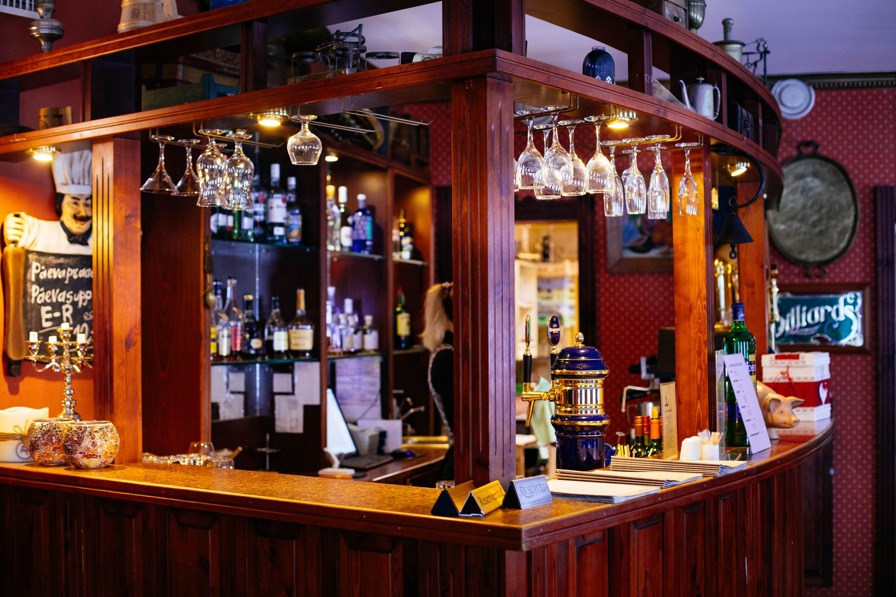

An amazing find,
their words
A gastro-bar on Avenida de la Paz in Sabinillas. A wide menu, staff people name in their reviews, and prices that keep coming up as the reason to return.
4.4 from 677 Google reviews
What people order
From the
kitchen
Dishes named in the venue’s own Google reviews.
- 01Beef steak
- 02Desserts
- 03A wide menu
- 04Affordable prices
Cosy, and
very well run


In their words
677 reviews,
4.4 stars
“Read the reviews online and thought we would try this spot. What an amazing find!!! Super friendly staff and great selection of items on the menu. Alexandra our waitress advised that the ribs were great and they didn’t disappoint!! Also had the meatball tapas which were delicious!! Highly recommend stopping in here if ”
“Very nice restaurant. The service was really nice and the waiter was very friendly and helpful. The food was also really nice and with very affordable price. We will definitely come back to try other dishes. A big surprise was a tomato soup, which was really good.”
“Excellent beef steak! Cosy atmosphere and the desert was absolutely delicious!”